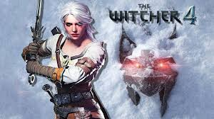

Los mejores videojuegos
Estos son algunos videojuegos que destacan por su jugabilidad, historia o diseño. ¡Espero que encuentres algo nuevo para disfrutar!
The Legend of Zelda: Breath of the Wild

Este juego de Nintendo redefine los mundos abiertos con su diseño inmersivo y libertad total. La exploración y las mecánicas de juego son simplemente adictivas.
The Witcher 3: Wild Hunt
Un RPG épico con una narrativa profunda y un mundo lleno de detalles. Acompaña a Geralt de Rivia en una aventura que combina acción, decisiones morales y un entorno visualmente impresionante.
Hollow Knight

Este indie es una joya del género metroidvania. Con un arte hermoso y una dificultad desafiante, te sumerge en un mundo oscuro lleno de secretos.
Videojuegos más jugados en 2025
Estos son algunos de los videojuegos que han dominado las listas de popularidad en 2025, atrayendo a millones de jugadores en todo el mundo.
- Monster Hunter: Wilds: Un éxito masivo de Capcom, este juego de acción RPG destaca por su combate contra criaturas colosales y su mundo abierto lleno de vida.
- Assassin's Creed Shadows: Ambientado en el Japón feudal, este título combina sigilo y acción con gráficos impresionantes, siendo uno de los favoritos del año.
- Call of Duty: Black Ops 6: La última entrega de la saga de disparos ofrece una campaña envolvente y un multijugador adictivo, manteniendo su lugar en el top.